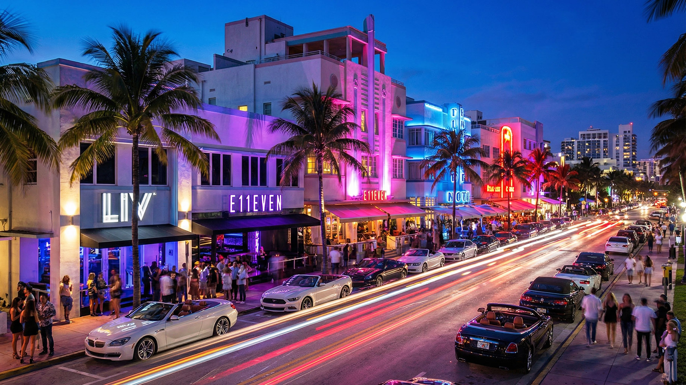
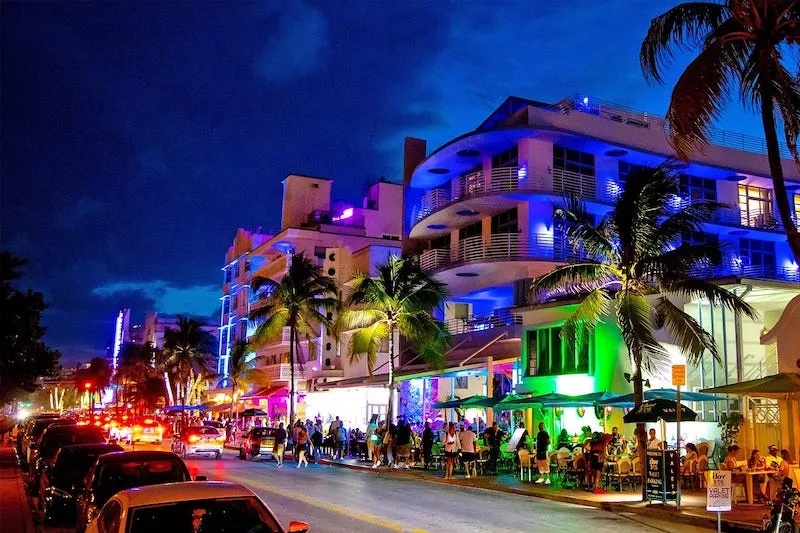
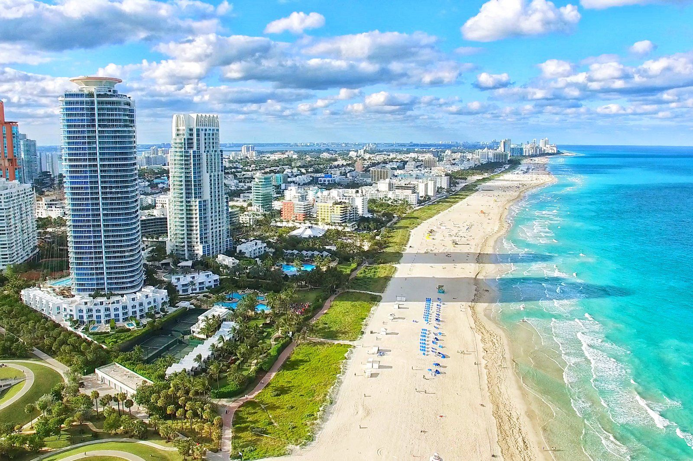

Welcome to Miami
Get to know a little about this magical city.
Miami is one of the most famous cities in the United States, located in the state of Florida. Known for its crystal-clear beaches, tropical climate, and vibrant nightlife, the city attracts millions of tourists every year. Among its main attractions are the famous South Beach, with its white sand and Art Deco architecture; Ocean Drive, known for its restaurants and nightlife; Wynwood, a neighborhood filled with murals and street art; Little Havana, which preserves the strong influence of Cuban culture; and Bayside Marketplace, one of the best places for shopping, sightseeing, and enjoying views of Biscayne Bay. With its unique blend of culture, entertainment, and beautiful landscapes, Miami is one of the most desired tourist destinations in the world.

Top tourist attractions
Ocean Drive

Ocean Drive is one of Miami's most famous streets, located in the heart of South Beach. It is known for its colorful Art Deco buildings, palm trees, restaurants, and vibrant nightlife. Both tourists and locals visit Ocean Drive to enjoy the beautiful scenery, walk along the avenue, and experience the unique atmosphere that makes Miami so special.
Miami Beach

Miami Beach is one of the most popular destinations in Florida, famous for its white sandy beaches, clear blue waters, and tropical atmosphere. Visitors from around the world come to relax by the ocean, enjoy water activities, and experience the city's vibrant culture and nightlife. It is a perfect place for both relaxation and entertainment.
Bayside Marketplace

Bayside Marketplace is a popular shopping and entertainment destination in Miami. Located next to Biscayne Bay, it offers a variety of shops, restaurants, and live music. Visitors can also enjoy beautiful waterfront views and take boat tours around the bay.